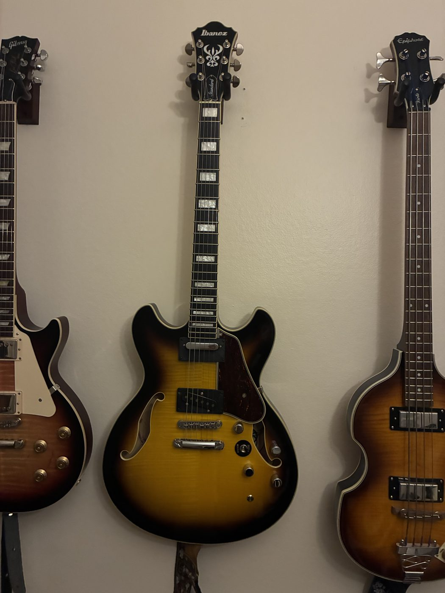
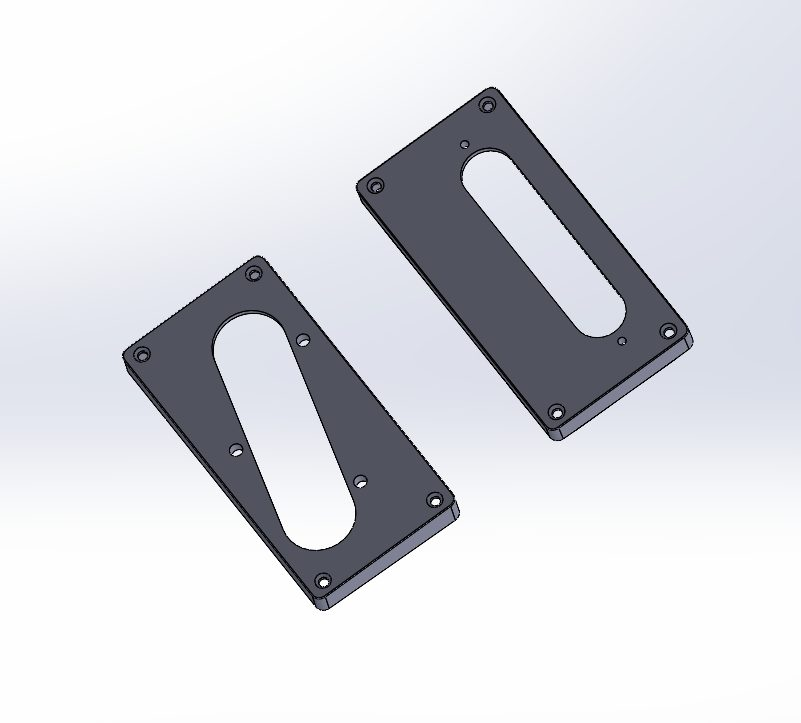
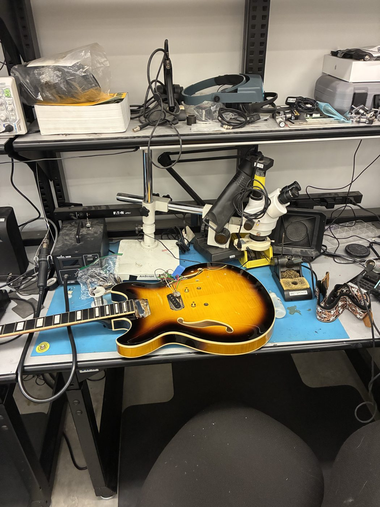
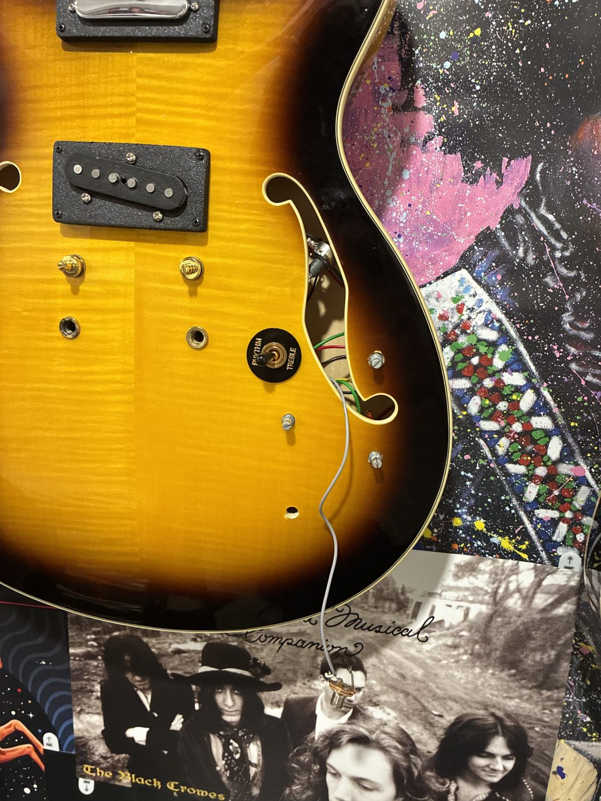
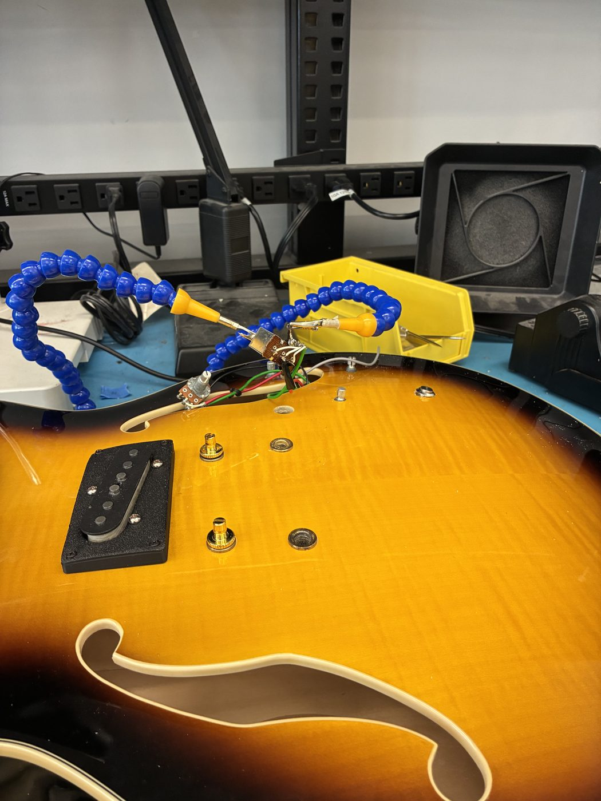
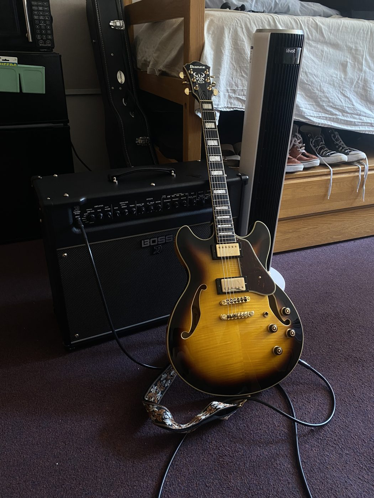

Custom Guitar Mods
2025
- Converted an Ibanez semi-hollow to Telecaster single-coils with custom adapter rings.
- Rewired the guitar with a kill switch and electronics matched to single-coil pickups.
- Sourced matched hardware, including a Telecaster barrel bridge for Nashville-style mounts.

Background
Nearly every electric guitar made today traces back to one of two brands: Fender or Gibson. The two companies defined two very different design languages, and they are just as different under the hood. Most of that difference comes down to pickups, the magnets that turn string vibration into signal. Fender guitars are built around single-coil pickups, which are bright, clear, and a little noisy, while Gibson guitars use humbuckers (double-coil pickups), which are thicker, warmer, and quieter. The look, the feel, and the sound of almost any electric guitar sit somewhere between those two worlds.
Why I built it
I have always been a Gibson person. The first song I ever set out to learn was Sweet Child O' Mine, and I fell in love with the look of Slash's Gibson Les Paul, which is still my main guitar today. Over time, though, I also grew to love the sound of the Fender Telecaster, that bright, snappy single-coil tone, even though I never liked how a Telecaster looks or feels in my hands. That left me wanting the best of both worlds: the voice of a Telecaster in a body I actually love. As an engineer, I realized I did not have to choose between them. I could just build it.
Adapting the pickups
I started with my other electric, an Ibanez Artcore, which is Ibanez's take on the Gibson ES-335, along with a pair of vintage-style Telecaster single-coil pickups. The catch is that Telecaster pickups are shaped nothing like the humbucker routes in the Artcore, so they will not simply drop in. To bridge the gap, I modeled and printed a set of adapter pickup rings that let the single-coil Telecaster pickups mount cleanly into the guitar's humbucker slots.
 
Rewiring and a kill switch
With the pickups mounted, I rewired the guitar. In the process I found that because these pickups were never designed for this body, the neck pickup's lead wires were long enough to reach all the way to its volume potentiometer. Rather than trim them, I used the extra slack to add something I had been curious about: a kill switch, a simple on/off switch for the signal. Single coils hum more than humbuckers, so an instant mute felt genuinely useful. I wired it in, and it worked on the first try.
 
Matching the electronics
Playing it, though, something felt off. I learned that because humbuckers put out a stronger signal, humbucker guitars use different electronics than single-coil guitars, including higher-value potentiometers and different tone capacitors. My Artcore still had all of its humbucker-spec parts. So I swapped out every component in the signal path, the potentiometers, the capacitors, and the wiring, to match what single coils actually want, and the guitar finally sounded the way I had imagined.
Matching the hardware
At that point it sounded great, but I am detail-oriented, and there was still a hardware mismatch left over from the original build. I sourced new hardware to bring everything into agreement, and along the way discovered that someone makes a Telecaster-style "barrel" bridge that drops straight into the Nashville-style bridge mounts you find on a Gibson-inspired guitar. That let me carry the Telecaster detail all the way through without modifying the body.
Result and next steps
After many hours, I ended up with a guitar that is genuinely one of a kind: a semi-hollow body I love, carrying the single-coil voice I was chasing, with a kill switch and matched electronics that make it truly mine. It sounds exactly like what I set out to build, and it is something I am really proud of. My next step is to add a vibrato (whammy) system, since none of my current instruments can do that yet.
